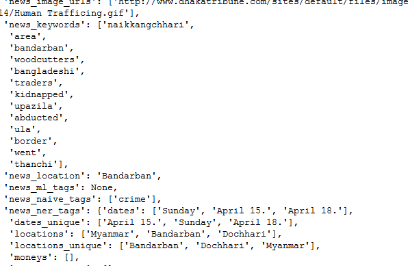
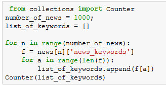
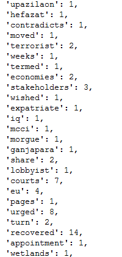
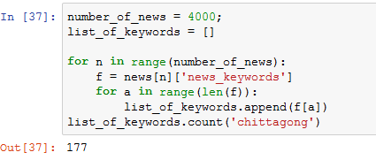
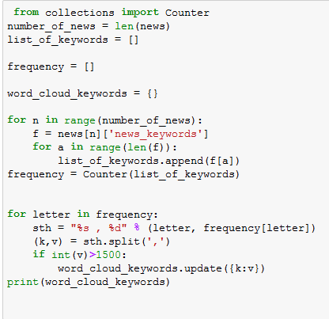

If there is one thing we will be taking with us from this workshop, it's this - We have such an immense quantity of information at our disposal that we can verify ourselves what we should believe in and what we shouldn't, rather than blindly believing in the society. In this small experiment, we have analysed data from a newspaper (Dhaka Tribune), and tried to verify a bunch of hypothesis. In another words, this is "News about news"!
We parsed the data that was provided to us by Kolpokoushol (Thanks Saquib bhai and Mishuk bhai!) using the Python programming language. Parsing is a process that involves extracting certain information from a labyrinth of encoded text. The information was mainly keywords associated each news. Afterwards, we made a couple of visualisations via various means.
We started with JSON data to begin with. What a mess!
We used the code below to extract keywords from each news, and then find how many times each keywords occur
The result after parsing:
In some cases, we had to find the frequecny of a certain keyword. For example, the code below yields the number of times "chittagong" occurs in the first 4000 news.
Finally, we wrote a code that returns all keywords with frequency greater than a threshold.
